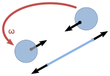
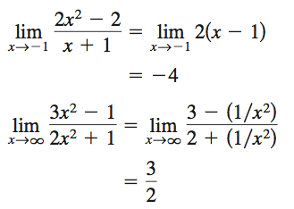

-牛頓運動定律基於牛頓力學的基本假設：
空間是絕對的，可以認為是數學上的抽象空間，和空間內的填充物質無關。
-時間是連續的、均勻流逝的、無窮無盡的。
-時間和空間無關。
-時間和運動狀態無關。
-物體的質量和物體的運動狀態無關。
-廣義相對論在第一條假設上有突破，狹義相對論突破了第三、四、五條假設。因此：牛頓運動定律只適用於:

質點
-牛頓運動定律中所指的物體為質點。
-對質點系，運用牛頓運動定律中的第二定律時一般採用隔離法，或者採用質點系牛頓第二運動定律。
-對於作用力非恆力的情形，如時間、速度或位置相關性的力，應用積分等方法，牛頓運動定律亦可使用。

慣性參考系
-孤立質點相對它靜止或做勻速直線運動的參考系為慣性參考系。
-在非慣性參考系中牛頓運動定律不適用，因為不受外力的物體在該參考系中也可能具有加速度。
-與牛頓第一運動定律相悖；只有在慣性參考系中牛頓運動定律才適用。
-但通過慣性力的引入可以使牛頓運動定律中的第二定律的表示形式在非慣性系中適用，即使用力學方程  求解力學問題。
求解力學問題。
-式中  為在慣性系中測得的物體受的合力，
為在慣性系中測得的物體受的合力，  為在非慣性系中測得的慣性力。
為在非慣性系中測得的慣性力。
宏觀問題
-當考察的物體的運動線度可以和該物體的德布羅意波相比擬時，由粒子運動不確定性關係式可知，該物體的動量和位置已不能同時準確獲知。
-故牛頓動力學方程缺少準確的初始條件而無法求解，即經典的描述方法由於粒子運動不確定性關係式已經失效或者需要修改。
-對於一個作用量接近或小於普朗克常量h=6.6×10⁻³⁴J·s的微觀粒子，必須使用量子力學。
- 量子力學用希爾伯特空間中的態矢概念代替位置和動量的概念來描述物體的狀態，用薛定諤方程代替牛頓動力學方程。
-用態矢量代替位置和動量的原因是由於測不準原理而無法同時知道位置和動量的準確信息。
-但是可以知道位置和動量的概率分佈，測不準原理對測量精度的限制就在於兩者的概率分佈上有一個確定的關係。
低速問題
-若物體的速度v與光速 c=3.0×10⁸m/s接近時，必須使用狹義相對論。
-牛頓運動定律對於伽利略變換是協變的，但對於洛倫茲變換不是協變的，因此其不能和狹義相對論相容。
-當物體做高速移動時，需要修改力、速度等力學變量的定義，使動力學方程能夠滿足洛倫茲協變的要求，在物理預言上也會隨速度接近光速而與經典力學有不同。
具有內在隨機性
-其包含的“不確定行為”遠多於由它所給出的“確定行為”，特別是在保守系統及耗散系統中。
-牛頓運動定律中的三條定律各自獨立，各自存在適用範圍。
-各條定律不同表述的細微變化也會產生各自適用範圍的改變，具體的表述和對應拓廣形式的使用範圍可查閲各獨立詞條。

-在過去兩百年中，物理學者完成了很多個檢驗核對牛頓運動定律的實驗與觀測，牛頓定律能夠計算出很好的近似結果。
牛頓定律
牛頓萬有引力定律
微積分數學方法
-但當遇上這些狀況時，牛頓運動定律並不適用，這時候需要更進階的物理理論。
超高速或非常強烈重力場的狀況下，我們需要相對論修正和解釋一些天體運動和現象，例如黑洞。
在原子尺寸，我們需要量子力學解釋原子的發射光譜等物理現象。
-例外的是，在現代工程學裏，對於一般應用案例，像車輛或飛機的運動，牛頓運動定律已能準確地解釋和計算工程師遇到的問題。
-實際應用上，任意可以近似看做如上時空的系統，均可以使用牛頓力學進行簡化計算。
-例如宏觀低速下的本宇宙，各類相互作用可視作點對點的超距作用，可直接使用牛頓三定律進行計算，實際誤差很小。